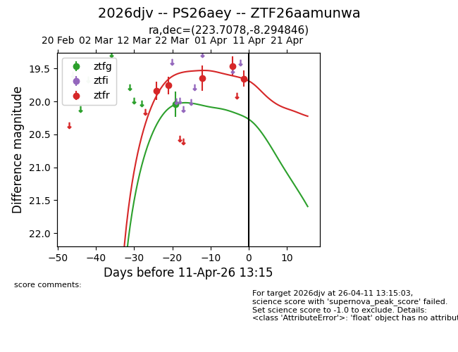
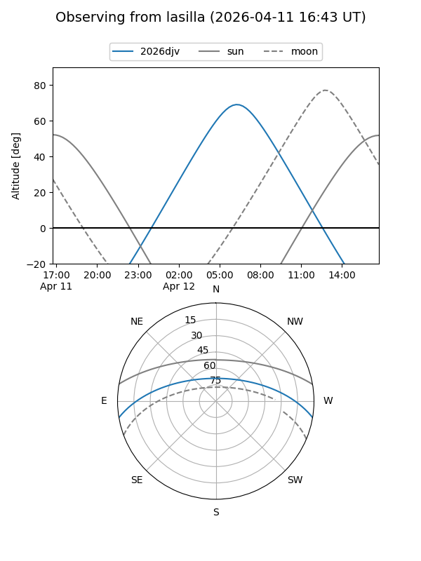
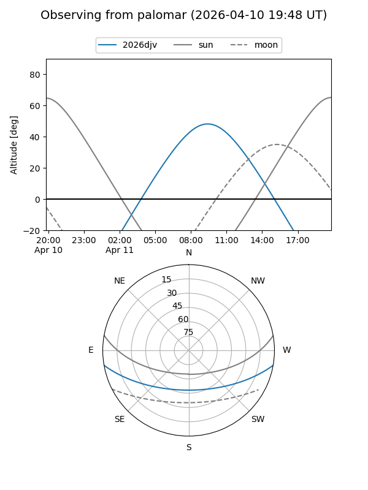
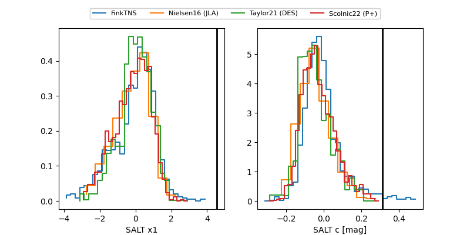

2026djv
Target 2026djv at 2026-04-11 13:23
Aliases and brokers:
FINK: link
Lasair: link
ALeRCE: link
TNS: link
YSE: link
alt names
ZTF26aamunwa (ztf,fink_ztf)
2026djv (tns,yse)
PS26aey (panstarrs)
Coordinates:
equatorial (ra, dec) = 223.7078,-8.29485
equatorial (HMS+DMS) = 14:54:49.87,-08:17:41.45
galactic (l, b) = (347.4631,+43.65409)
Flags:
Photometry:
last ztfg=20.04, ztfr=19.65
1 ztfg, 5 ztfr detections
Lightcurve

Visibility


Additional plots
